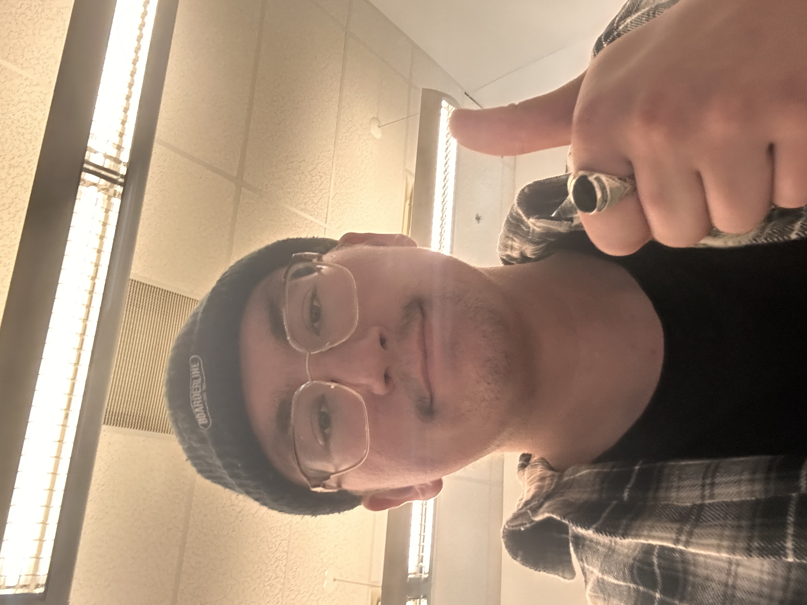

My Story, My legacy
In day-to-day life, his time is consumed by DJing, music production and social media management. He runs a DJ collective and event promotion company and though it may seem as a meticulous job, he rarely views it as work and more so a thoroughly enjoyed hobby. These hobbies are what inspired him to take on the Multimedia Production program at Lethbridge Polytechnic, with web design and sound design clearly and directly tied to many of his classes this semester. In high school he lacked motivation, however he also had extreme undiagnosed ADHD (he would have loved to know that at the time), which made it difficult to prosper in most classes.
Outside of work and school, he comes from a massive family. Directly he had only one younger brother, however his 5 uncles and 10 aunties on his mom’s side have given him many, MANY cousins. His family was spread out across the globe, from B.C. all the way to Japan, and then to Argentina, culture ran deep within his family. He is not currently a part of any sports team, but if you have seen him, you would be correct in assuming he had played basketball in the past. He has travelled quite a bit, but his all-time favourite place he has visited would be Europe in general. The electronic scene there is like no other.
A quick story about him that he will forever enjoy telling would be the first time he performed as a DJ for 5000 people, while being completely unaware there was that many people. The crowd was loud, so loud that it felt as if the loop earplugs he was wearing were not even in. He got on stage, neon lights, lasers, and smoke billowing out from beneath him. He looked out across the clearing that the rave had been set on and saw nothing but eyes lighting up as they looked upon him. He nearly had a panic attack. He shook as he inserted his USB. He took a deep breath and went on to play probably one of the worst sets of his life.
The story of GHOOLY continues to go strong, with all kinds of gigs and areas of networking to be done. You can catch him spinning for CKXU's "House of Crimson" as well as his personal passion project "Drop Culture" where he hosts shows focused on different genres at unique locations throughout the city. He hopes that this site has grabbed your attention and that you will join alongside his journey to wherever his passion may take him...

(GHOOLY in class making this site)
Lethbridge Electronic Music Festival - Corona Tavern Medicine Hat - Telegraph Taphouse Tuesdays - Moonlight Music Fest - Wildin @ Pulse & Canadian Brewhouse - Hudsons Canada's Pub - Bike Rave @ Theoretically Brewing